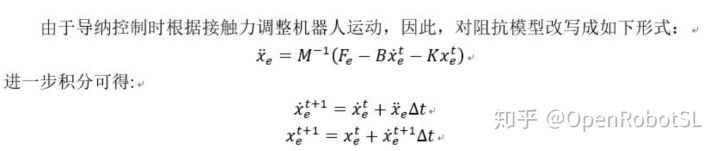

Home
本文转载自： https://zhuanlan.zhihu.com/p/339951803
前一篇文章介绍了 基于重力+摩擦力补偿实现 电流环拖动示教的逻辑，这里帮大家补上部分核心代码
首先，回归一下基于末端六维力拖动示教方案
OpenRobotSL：机械臂阻抗与导纳控制，附带6DOF导纳控制代码
核心部分就是外力Fe 减去上个周期的B*Xedot(t）,K*Xe(t)，除以M矩阵，得到当前周期Xe_ddot(t+1)，然后积分得到当前周期的Xedot(t+1）Xe(t+1)。可以通过雅可比速度映射到关节空间速度，然后积分得到关节位置。或者位置逆解，得到关节位置叠加
下面是基于重力+摩擦力补偿实现拖动示教流程代码
首先这种方式之前介绍了注意问题
OpenRobotSL：机械臂力控与如何工程实现动力学辨识拖动1.运动一定要低速，避免激发MC矩阵影响
2.模型采用标准DH，动力学采用拉格朗日动力学重力项部分
3.摩擦力采用简单的库伦+粘滞，每个关节单独计算摩擦力，也就是关节i的摩擦力只有与关节i自己的运动有关，不考虑其他关节影响
%关节变量为q1,q2,q3,q4,q5,q6 dqi为速度，摩擦力需要
%r为质心位置
r1=[xc1 yc1 zc1 1]';
r2=[xc2 yc2 zc2 1]';
r3=[xc3 yc3 zc3 1]';
r4=[xc4 yc4 zc4 1]';
r5=[xc5 yc5 zc5 1]';
r6=[xc6 yc6 zc6 1]';
%g=9.81重力加速度
gg=[0 0 -g 0];
%标准DH参数，UR构型
a=[0,a2,a3,0,0,0];
d=[d1,0,0,d4,d5,d6];
alpha=[pi/2,0,0,pi/2,-pi/2,0];
q=[q1,q2,q3,q4,q5,q6];
%齐次变换矩阵
for i=1:6
T(:,:,i)=[cos(q(i)),-sin(q(i))*cos(alpha(i)),sin(q(i))*sin(alpha(i)),a(i)*cos(q(i));
sin(q(i)),cos(q(i))*cos(alpha(i)),-cos(q(i))*sin(alpha(i)),a(i)*sin(q(i));
0,sin(alpha(i)),cos(alpha(i)),d(i);
0,0,0,1];
end
%重力项中需要用的转换矩阵
a10=T(:,:,1);
a21=T(:,:,2);
a32=T(:,:,3);
a43=T(:,:,4);
a54=T(:,:,5);
a65=T(:,:,6);
a20=a10*a21;
a30=a20*a32;
a40=a30*a43;
a50=a40*a54;
a60=a50*a65;
%重力项中的Uii
u11=a10对q1求导;
uij=ai0对qj求导
%最终结果,t1-t6为关节力矩,后面kii部分就是摩擦力
t1=-m1*gg*u11*r1-m2*gg*u21*r2-m3*gg*u31*r3-m4*gg*u41*r4-m5*gg*u51*r5-m6*gg*u61*r6+k11*sign(dq1)+k12*dq1;
t2=-m2*gg*u22*r2-m3*gg*u32*r3-m4*gg*u42*r4-m5*gg*u52*r5-m6*gg*u62*r6+k21*sign(dq2)+k22*dq2;
t3=-m3*gg*u33*r3-m4*gg*u43*r4-m5*gg*u53*r5-m6*gg*u63*r6+k31*sign(dq3)+k32*dq3;
t4=-m4*gg*u44*r4-m5*gg*u54*r5-m6*gg*u64*r6+k41*sign(dq4)+k42*dq4;
t5=-m5*gg*u55*r5-m6*gg*u65*r6++k51*sign(dq5)+k52*dq5;
t6=-m6*gg*u66*r6+k61*sign(dq6)+k62*dq6;下面分析如何编写辨识
首先用最简单的6关节来看，t6分为2项：
-m6*gg*u66*r6 （1）
k61*sign(dq6)+k62*dq6 （2）
公式（1）可以展开就是下面部分，公式（2）不变
t6=g*m6*xc6*(cos(q6)*(cos(q2 + q3 + q4) - (4967757600021511*sin(q2 + q3 + q4)*sin(q5))/81129638414606681695789005144064 + cos(q5)*((24678615572571482867467662723121*cos(q2 + q3 + q4))/6582018229284824168619876730229402019930943462534319453394436096 + 24678615572571482867467662723121/6582018229284824168619876730229402019930943462534319453394436096) - 24678615572571482867467662723121/6582018229284824168619876730229402019930943462534319453394436096) - sin(q6)*(sin(q2 + q3 + q4)*cos(q5) + sin(q5)*((4967757600021511*cos(q2 + q3 + q4))/81129638414606681695789005144064 + 4967757600021511/81129638414606681695789005144064))) （4）
-g*m6*yc6*(sin(q6)*(cos(q2 + q3 + q4) - (4967757600021511*sin(q2 + q3 + q4)*sin(q5))/81129638414606681695789005144064 + cos(q5)*((24678615572571482867467662723121*cos(q2 + q3 + q4))/6582018229284824168619876730229402019930943462534319453394436096 + 24678615572571482867467662723121/6582018229284824168619876730229402019930943462534319453394436096) - 24678615572571482867467662723121/6582018229284824168619876730229402019930943462534319453394436096) + cos(q6)*(sin(q2 + q3 + q4)*cos(q5) + sin(q5)*((4967757600021511*cos(q2 + q3 + q4))/81129638414606681695789005144064 + 4967757600021511/81129638414606681695789005144064))) （5）
+k61*sign(dq6)+k62*dq6 （2）
是不是发现了！
（4）部分需要辨识得是m6*xc6 (5)部分需要辨识的是m6*yc6 （2）部分需要辨识的是k61 k62
观察他们是线性组合方式，他们的系数 只与DH参数，关节运动有关，所以可以写成矩阵形式：
w1=g*(cos(q6)*(cos(q2 + q3 + q4) - (4967757600021511*sin(q2 + q3 + q4)*sin(q5))/81129638414606681695789005144064 + cos(q5)*((24678615572571482867467662723121*cos(q2 + q3 + q4))/6582018229284824168619876730229402019930943462534319453394436096 + 24678615572571482867467662723121/6582018229284824168619876730229402019930943462534319453394436096) - 24678615572571482867467662723121/6582018229284824168619876730229402019930943462534319453394436096) - sin(q6)*(sin(q2 + q3 + q4)*cos(q5) + sin(q5)*((4967757600021511*cos(q2 + q3 + q4))/81129638414606681695789005144064 + 4967757600021511/81129638414606681695789005144064)))
w2=-g*(sin(q6)*(cos(q2 + q3 + q4) - (4967757600021511*sin(q2 + q3 + q4)*sin(q5))/81129638414606681695789005144064 + cos(q5)*((24678615572571482867467662723121*cos(q2 + q3 + q4))/6582018229284824168619876730229402019930943462534319453394436096 + 24678615572571482867467662723121/6582018229284824168619876730229402019930943462534319453394436096) - 24678615572571482867467662723121/6582018229284824168619876730229402019930943462534319453394436096) + cos(q6)*(sin(q2 + q3 + q4)*cos(q5) + sin(q5)*((4967757600021511*cos(q2 + q3 + q4))/81129638414606681695789005144064 + 4967757600021511/81129638414606681695789005144064)))
w3=sign(dq6)
w4=dq6
t6=[w1,w2,w3,w4]*[m6*xc6,m6*yc6,k61,k62 ]' （6）
这样就是 可以使用最小二成法的形式了！
至此我们就辨识了6关节重力+摩擦力，同样的 我们只需要1-5关节 类似推导 都可以写成上面（6）形式，采用最小二成。因为观察最复杂在的t1，其实里面每一项都是t6的形式，只不过变量不同而已
t1=-m1*gg*u11*r1-m2*gg*u21*r2-m3*gg*u31*r3-m4*gg*u41*r4-m5*gg*u51*r5-m6*gg*u61*r6+k11*sign(dq1)+k12*dq1;
-m1*gg*u11*r1 可以展开，变为线性组合
-m2*gg*u21*r2同理。。。
下面给出5关节线性化图

所以最后结果也是线性组合的，至此原理推导结束！化简工作稍微麻烦点而已。
======================================================================
我的测试结果及程序
下面是我测试的代码：